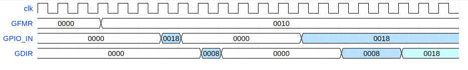

Управление GPIO осуществляется путем управления регистрами блока. Побитовый доступ к регистрам может быть осуществлен при использовании входа addr[1:0]. Его значение определяет тип доступа. Если GPIO содержит меньшее количество бит, чем 32, то старшие биты игнорируются. Чтение из регистров побитового доступа возвращает 0. Запись в регистры побитового доступа приводит к модернизации основных регистров.
Доступность регистра по чтению определяется параметром READ_*_ENA (*_ENA[1]) для соответствующего регистра.
Если применение GPIO не требует наличия какого-либо из регистров, то для него следует задать параметр *_ENA равными 0.
Каждый разряд регистра отвечает за конфигурацию соответствующего ему разряда вывода GPIO.
GDOR: выходной регистр данных (вывод gpio_out) содержит данные для передачи в I/O.
GOER: регистр разрешения выходных данных (вывод gpio_oe) определяет направление передачи данных. При 0b1 выходные данные на соответствующем разряде gpio_out разрешены.
GAFR: регистр разрешения функции (вывод gpio_en) используется для управления выбором функции в случаях, когда один I/O совмещает в себе функции нескольких устройств. При 0b0 разрешена функция GPIO, при 0b1 - альтернативная функция.
GPER: регистр разрешения притяжки служит для разрешения включения притяжек в I/O. При 0b1 притяжка разрешена. Тип притяжки задается GPTR.
GPTR: регистр типа притяжки определяет тип притяжки (к "земле"/к "питанию") на соответствующем выводе I/O. При 0b1 включается притяжка к "питанию", при 0b0 - к "земле".
GIER: регистр разрешения прерываний служит для разрешения прерываний при изменении состояний на каждом из разрядов GPIO. Прерывание разрешено при 0b1.
GISR: регистр типа источника прерывания определяет тип перепада на I/O, приводящий к генерации прерывания. Значение 0b0 определяет активным переключение из 1 в 0, значение 0b1 - из 0 в 1.
GIFR: регистр флагов прерываний содержит информацию о том, перепады на каких разрядах привели к генерации прерывания. Значение 0b1 в каком-либо из разрядов сигнализирует, что на этом выводе детектировано перепад, в соответствии со значениями GCMR и GIER. Регистр устанавливается при наступлении события, приводящего к генерации прерывания. Регистр сбрасывается при чтении.
GDIR: входной регистр данных содержит данные пришедшие с I/O. Если выбрана альтернативная функция (GAFR = 0b1), то соответствующие разряды регистра равны 0. Данные в регистр записываются по нарастающему фронту clk, с задержкой на 3 такта, если на соответствующем разряде используется фильтр (META_ENA равен 0b1).
GCMR: регистр выбора режима регистрации прерывания определяет по какому событию происходит генерация прерывания. Если равен 0b0, то по перепаду, определяемому GISR. Если равен 0b1, то прерывание генерируется по любому изменению состояния gpio_in.
GFMR: регистр выбора режима фильтрации входных данных. При 0b0 данные поступают в GDIR со схемы защиты от метастабильности (в соответствии с параметром META_ENA). При 0b1 значение регистра GDIR обновляется в случае регистрации одного и того же значения на выходе схемы защиты от метастабильности в течении 3 тактов clk.
Для сокращения числа выводов микросхемы может быть использовано мультиплексирование нескольких функций на одном блоке I/O (например, GPIO и uart). За управление мультиплексированием отвечает регистр GAFR (вывод gpio_en). Если соответствующий бит регистра сброшен, то I/O выполняет функцию GPIO (gpio_en должен быть подключен к I/O соответствующим образом), если установлен, то альтернативную функцию (uart).
Для использования вывода GPIO в режиме приема данных следует сбросить соответствующий бит GOER. В регистре GAFR должен быть сброшен соответствующий бит для использования вывода в качестве функции GPIO. Входные данные записываются в регистр GDIR (вывод gpio_in). Если значение GOER или GAFR не соответствует указанным требованиям, то соответствующий разряд GDIR равен 0b0.
Для использования вывода GPIO в режиме передачи данных следует установить соответствующий бит GOER. В регистре GAFR должен быть сброшен соответствующий бит для использования вывода в качестве функции GPIO. Передаваемые данные должны быть записаны в регистр GDOR и передаются через gpio_out. Если GOER равен 0b0, то вывод I/O должен находиться в 3-м состоянии или в режиме "открытого стока".
Для избавления от "плавающих" потенциалов в режиме приема могут быть использованы притяжки. Для разрешения притяжки следует установить бит GPER в 0b1. Для включения притяжки к "земле" следует сбросить бит GPTR, для включения притяжки к "питанию" - установить бит GPTR. Для сокращения энергопотребления в режиме передачи притяжки рекомендуется отключать.
GPIO может генерировать прерывания при изменении состояния выводов. Для генерации прерывания должны быть выполнены следующие требования:
Тип события, приводящего к генерации прерывания, определяется регистрами GISR и GCMR. Если GCMR равен 0b1, то прерывание генерируется по любому изменению на gpio_in. В противном случае, если GISR равен 0b1, то прерывание генерируется при переключении из 0 в 1 на gpio_in, если GISR равен 0b0, то при переключении из 1 в 0.
При возникновении события, приводящего к генерации прерывания, устанавливается соответствующий бит GIFR. GIFR сбрасывается при чтении. Если одновременно происходят чтение регистра и установка его бит вследствие переключения на gpio_in, то прочитано будет текущее значение GIFR, сброшены все биты за исключением тех, к которым применяется установка.
Сигнал ifg устанавливается, если в GIFR есть отличные от нуля разряды на следующем такте clk. Сбрасывается при чтении GIFR. Если одновременно с чтением GIFR происходит переключение на gpio_in, приводящее к генерации прерывания, то ifg сбрасывается и устанавливается на следующем такте clk.
Замечание. Чтение регистра GIFR следует проводить после детектирования прерывания. В противном случае при чтении GIFR на следующем после установки GIFR такте не произойдет установки ifg. Информация об источнике прерывания не будет потеряна, но само прерывание не будет сигнализировано.
Изменение на gpio_in регистрируется в GDIR с учетом задержки на 3 такта на входном фильтре, если он разрешен (META_ENA равен 0b1). Входной фильтр представляет собой сдвиговый регистр, используемый для защиты от метастабильности. Значение фильтра после сброса равно 0x0, поэтому рекомендуется запрещать прерывания (сбрасывать GIER) под воздействием сброса во избежание ложной генерации прерываний. Для сокращения энергопотребления фильтр (сдвиговый регистр) перестает сдвигать данные с gpio_in, если вывод сконфигурирован в режим передачи (GDOR равен 0b1) или в режим альтернативной функции (GAFR равен 0b1). Поэтому перед переключением в режим приема (сброс GDOR) и основной функции (GAFR равен 0b0) рекомендуется запрещать прерывание на соответствующем разряде и разрешать не ранее, чем через 4 такта clk, когда фильтр заполнится данными с gpio_in.
Переключение на gpio_in не приведет к изменению соответствующего разряда GIFR, если он уже установлен.
GPIO позволяет фильтровать помехи на входных линиях. Если бит GFMR установлен, то данные с выхода схемы защиты от метастабильности фильтруются по принципу длительности не менее 3 тактов. Выход фильтра изменяет свое значение на 1, если в течение предыдущих 3 тактов на gpio_in (с учетом задержки на схеме защиты от метастабильности) было захвачено значение 1. Аналогично для 0.

На рисунке приведен пример фильтрации значений на линии [4] (согласно настройке GFMR). При кратковременном переключении разрядов [3] и [4] из 0 в 1 в регистр GDIR поступают только изменения с линии [3]. При последующем длительном импульсе на тех же линиях, оба значения поступают в GDIR, однако имеют разницу в задержке - 3 такта, используемые для фильтрации входного сигнала.